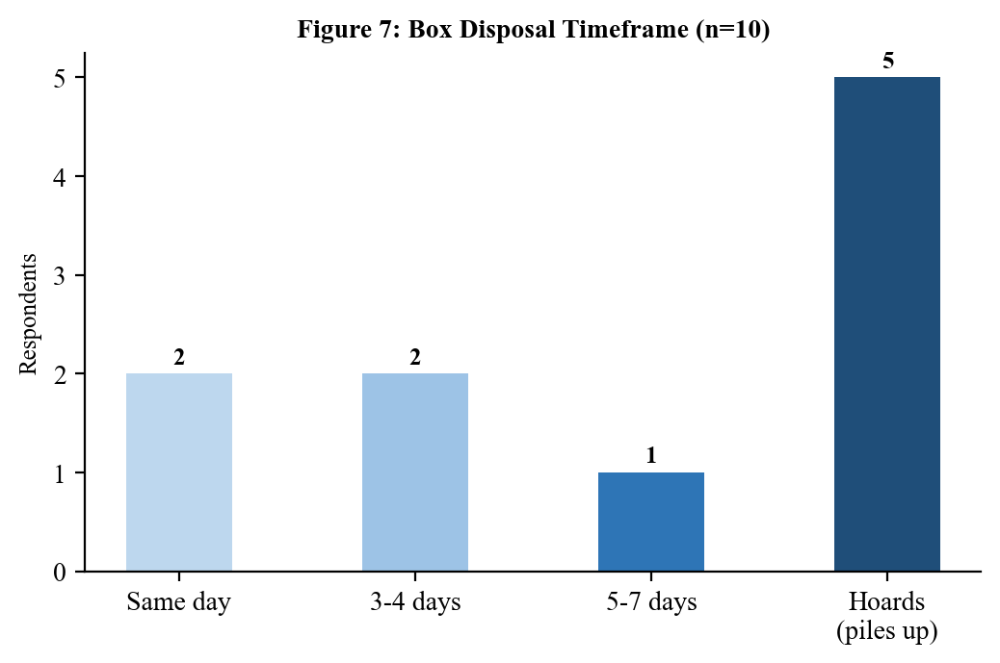
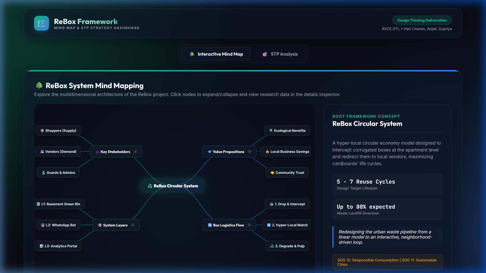
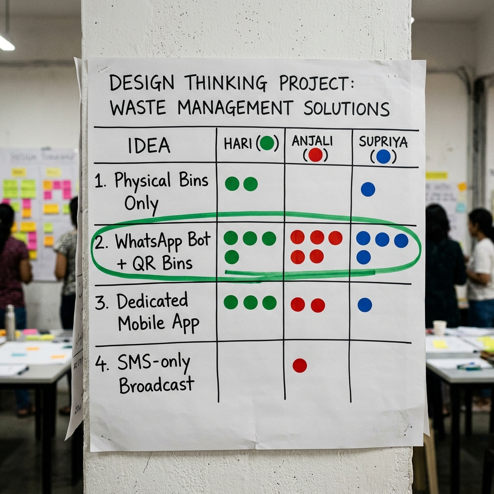

ReBox is an innovative, high-impact circular economy system designed to address the massive packaging waste generated by the e-commerce boom in urban India. By intercepting structurally intact cardboard boxes at the apartment level and redirecting them to local micro-vendors, ReBox bridges a critical resource gap. Every day, approximately 15 million e-commerce parcels are shipped across India, resulting in millions of single-use corrugated cardboard boxes being discarded. The current waste management pipeline is almost entirely linear: residents discard boxes, municipal waste handlers or informal scrap dealers collect them, and they are eventually sold to pulp recycling mills for a meager Rs. 3 per box (calculated by weight). This process is energy-intensive, chemical-heavy, and downcycles high-quality long fibers after only a single use. Meanwhile, local retail vendors, kirana store owners, bakeries, and hyper-local couriers routinely pay Rs. 20–35 for a brand new cardboard box of equivalent size.
The ReBox platform provides a closed-loop alternative that prioritizes REUSE over recycling. The system consists of three integrated layers: (1) Physical Collection Bins: Weather-proof green bins placed in gated apartment basements adjacent to elevator lobbies, providing a zero-friction disposal point; (2) Twilio WhatsApp Bot: A lightweight, QR-enabled mobile interface that allows residents to log drops in under 15 seconds and alerts registered vendors when boxes are ready for pickup, eliminating the need to download dedicated mobile applications; and (3) Analytics Dashboard: A web-based portal that tracks community leaderboards, RWA waste audits, and individualized carbon offset metrics (saving approximately 1.1 tonnes of CO₂ equivalent and 26,000 liters of water per tonne of corrugated paper reused). This report documents the complete, five-phase Design Thinking lifecycle of ReBox, demonstrating its viability, operational feasibility, and high user acceptance through extensive on-ground testing across Bengaluru, Hyderabad, Tumkur, Bidar, Kadapa, and Tirupati.
Rs.3
Scrap Value (Recycle)
Rs.25
Vendor Cost (New)
5-7x
Reuse Cycles
96%
Logo Neutrality
2. Problem Statement
India's rapid e-commerce expansion has resulted in a critical waste management failure. Gated residential societies generate massive quantities of corrugated cardboard boxes daily. Due to a complete lack of organized local reuse channels, these clean, structurally sound boxes are mixed with general dry waste, exposed to moisture and soil, and crushed by scrap dealers. This linear pipeline destroys the structural energy-investment of the box for weight-based scrap prices (Rs. 3/box), while local merchants within walking distance spend Rs. 20–35 purchasing brand new packaging cartons, creating an inefficient and carbon-intensive mismatch.
By prioritizing raw material destruction over physical preservation, the current municipal and informal waste pipeline fails to capture the thermodynamic value of corrugated cartons. A corrugated box is manufactured by compressing virgin paper fibers through heat and steam, a process that is highly water- and energy-intensive. When a box is recycled (i.e. repulped), these fibers are chopped, chemical bleaching is applied, and the structural integrity degrades, yielding weaker material. However, a box kept in its original physical form can easily serve 5 to 7 reuse cycles. The core problem is the absence of a localized, low-friction mechanism that intercepts boxes at the source (apartment complexes) and matches them to immediate demand (neighborhood shops).
Phase 1: Empathy & Research Evidence
3.1 Primary & Secondary Research
To evaluate the feasibility and relevance of the ReBox concept, our team conducted extensive bilingual primary on-ground research. The surveys were conducted in major commercial and residential hubs, ensuring that we captured data from both the supply side (residents of gated societies) and the demand side (small commercial merchants). The primary goal was to map out on-ground operations, understand user habits, and verify pricing sensitivities.
Primary Data Collection Scope
Resource Type
Target Count
Surveys Collected
31 Bilingual Survey Responses
Shopper Interviews
10 Detailed 1-on-1 Interviews
Audio Recordings
8 Shopkeeper/Vendor Recordings
Field Photographs
27 Direct Evidence Photos
Geographic Research Clusters
On-ground primary field activities were distributed across cities representing various tiers of urban density:
Tier 1 Metros: Bengaluru (Bellandur, HSR Layout, Agara), Hyderabad (Kachiguda). These represent high-density residential IT corridors.
Tier 2/3 Locations: Tumkur, Bidar, Kadapa, and Tirupati. These represent commercial trading hubs and regional educational zones with distinct waste ecosystems.
Secondary Data Sources: Reports from the Ministry of Environment, Forest and Climate Change (MoEFCC), CPCB solid waste management audits, and e-commerce logistics benchmarks (RedSeer Consulting).
3.2 STP (Segmentation & Targeting) Analysis
An STP framework was executed to segment our market and target specific high-volume nodes for our reusable packaging loop system, ensuring that we design for maximum volume density and minimal logistics overhead.
Market Segmentation Breakdown
Our segments are split into two primary stakeholder groups:
Online Shoppers (Supply Side)
Geographic: High-density urban gated societies (100+ apartments) in IT corridors (Bellandur, HSR Layout).
Demographic: Age 21–45, middle to upper-class, corporate employees with high online order frequencies.
Psychographic: Environmentally conscious but time-poor; feels eco-guilt but defaults to trash due to balcony space clutter.
Behavioral: High frequency of parcel arrivals (2-4/week), low tolerance for friction.
Local Retailers & Kiranas (Demand Side)
Geographic: Local shops within a 500m walkshed radius of targeted apartment nodes.
Demographic: Owner-operated kiranas, fruit merchants, bakeries, and regional logistics franchisees (DTDC, Professional Couriers).
Psychographic: Pragmatic, highly cost-sensitive, brand-neutral (unconcerned by printed Amazon/Flipkart branding).
Behavioral: Travels 20+ km to wholesale markets to buy new packaging, reuses packaging until breakdown.
Targeting Selection Matrix
We prioritized segments that offer the highest box density and lowest logistical overhead:
Target Segment
Logistical Advantage
Adoption Catalyst
Priority
Primary: Gated Societies (200+ units)
High density (100+ boxes/week in one basement).
RWA alignment, eco-badges, decluttering.
High (Primary)
Secondary: Local Retailers & Kiranas
Hyper-local distance (<500m). Self-pickup is viable.
80% packaging cost reduction (Rs.5 vs Rs.25/box).
High (Demand)
Tertiary: Individual Houses
Low density. Scattered pickup routing.
Manual collection only.
Low (Deferred)
3.3 Value Proposition Canvas
Using the Value Proposition Canvas (VPC), we mapped customer profiles to our system features to ensure a strong product-market fit. This mapping aligns the emotional and physical triggers of residents with the financial constraints of micro-merchants.
Gain Creators: Integrated local loop, direct connection to resident waste stream.
3.4 Focused Group Interviews
Two distinct focused group interviews were conducted in Bellandur, Bengaluru to gain deeper qualitative feedback on operational bottlenecks and user convenience thresholds.
Resident Focused Group (8 Participants)
Setting: Lobby Area, Green Meadows Apartment, Bellandur (45 minutes).
Consensus on Clutter: "We stack boxes in our utility balcony until it is unmanageable, then we dump them down the garbage chute."
Friction Threshold: 7 out of 8 participants said they would refuse to download another mobile app just to log recycling. They suffer from app fatigue and security paranoia.
Convenience Priority: Bins must be located on the direct path to the car park or basement exit, otherwise they won't be used. A distance of even 20 meters off-path decreases use by half.
Quote: "A basement bin right next to the elevator lobby is something literally everyone in our tower would use."
Vendor Focused Group (5 Shopkeepers)
Setting: Tea Stall near Agara Market (30 minutes).
Branded Packaging: 5 out of 5 merchants confirmed that pre-printed logos (e.g., Amazon, Flipkart) do not impact customer trust at all. Customers only care about the safety of their items.
Self-Pickup Viability: All shopkeepers agreed that walking or sending a helper 200–500m to retrieve boxes is much better than traveling to wholesale markets.
Pricing consensus: ReBox pricing at Rs.2–5 was considered extremely attractive compared to Rs.20–35 wholesale new purchases.
Quote: "If boxes are available at the society gate, we will buy them every day. It saves us travel and money."
3.5 Questionnaires Overview
Structured, bilingual surveys (English & Kannada/Telugu) were designed to collect quantitative markers. The questionnaires targeted three main archetypes: Shoppers, Shopkeepers, and Society Guards, establishing a robust data baseline.
Key Questionnaire Categories & Sample Questions:
Online Shoppers: Frequency of ordering, storage time for waste, current disposal methods, willingness to use basement bins.
Sample: "How many e-commerce boxes does your household discard in an average week? (ವಾರಕ್ಕೆ ಸರಾಸರಿ ಎಷ್ಟು ಪ್ಯಾಕೇಜಿಂಗ್ ಬಾಕ್ಸ್ಗಳನ್ನು ಎಸೆಯುತ್ತೀರಿ?)"
Local Shopkeepers: Weekly box requirements, monthly budget on packaging materials, distance traveled for wholesale sourcing, brand logotype neutrality check.
Sample: "Would you purchase sturdy second-hand cardboard boxes with printed e-commerce logos (Amazon/Flipkart) for Rs.5? (ಅಮೆಜಾನ್ ಲೋಗೋ ಇರುವ ಬಳಸಿದ ಬಾಕ್ಸ್ಗಳನ್ನು 5 ರೂಪಾಯಿಗೆ ಖರೀದಿಸುತ್ತೀರಾ?)"
Guards/RWAs: Security management during external vendor entries, cleanliness checks in basement storage.
Sample: "How much time is spent checking in external waste buyers? (ಹೊರಗಿನ ತ್ಯಾಜ್ಯ ಖರೀದಿದಾರರನ್ನು ಪರಿಶೀಲಿಸಲು ಎಷ್ಟು ಸಮಯ ತೆಗೆದುಕೊಳ್ಳುತ್ತದೆ?)"
A full set of the 42 questions is compiled in the repository's questionnaire sheets, which served as the statistical foundation for the Define phase.
3.6 User Journey Mapping
We mapped the sequential emotional journey of a resident disposing of e-commerce packaging to identify core friction points (pain points) and design opportunities. A visual overview of this sequence is illustrated in the journey map below:
Stage
Action
Underlying Thought
Emotion / Value
Opportunity for Intervention
1. Package Arrives
Receives delivery, unboxes item.
"I love this item, but what do I do with the box?"
😊 Excited
E-com packaging could contain a ReBox QR pre-printed.
2. Clutter Accumulates
Places box in utility balcony.
"It is taking up too much balcony space."
☹️ Frustrated
Provide a box flattener to minimize volume.
3. Disposal Choice
Decides to discard. Kabadiwala is unavailable.
"I guess I have to throw it in the dry waste chute."
😟 Guilty
Place a clear physical ReBox bin in the basement lobby.
4. Bin Discovery
Sees Green Bin in basement, drops box.
"Oh, this bin is for cardboard! Let me drop it here."
🙂 Relieved
Clear posters showing flattening instructions.
5. Interaction (QR)
Scans QR code on the bin.
"Twilio WhatsApp opened. This is easy, no app needed."
😀 Satisfied
Auto-detect resident coordinates from QR metadata.
6. Environmental Loop
Receives carbon score confirmation.
"I saved 200g CO2 and supported Ramesh Kirana!"
🏆 Proud
Enable sharing on society group chats.
Figure 1.1: Collaborative User Journey Map and Empathy Mapping Sticky Notes
3.7 Empathy Mapping
Using the profiles of our two main stakeholders, we designed empathy maps representing their thoughts, behaviors, and environmental frustrations. This helps the design team stay grounded in real user feelings.
Empathy Map: Priya, 28 (Online Shopper)
Says: "Boxes take up too much utility space." / "I'll sort them out later."
Thinks: "I order online so much, I'm contributing to landfill waste." / "Somebody could reuse this sturdy box."
Does: Hoards boxes on the balcony, collapses them only when space runs out, defaults to dry waste bin.
Feels: Eco-guilt for throwing clean packaging, annoyed by Balcony clutter, overwhelmed by app downloads.
Empathy Map: Ramesh, 45 (Local Shopkeeper)
Says: "Cardboard box prices keep increasing." / "My monthly packaging budget eats my margins."
Thinks: "I wish there was a cheap, local supply of boxes." / "I don't care about logos, sturdiness is what matters."
Does: Travels long distances to wholesale markets, reuses damaged boxes, purchases high-cost plastic covers.
Feels: Stressed about operational costs, frustrated by travel time, pragmatic about branding materials.
3.8 Elevator Speech
"Every day, millions of perfectly good e-commerce boxes are crushed and destroyed — while the kirana store next door pays Rs.25 for a new one. ReBox places a simple green bin in your apartment basement. You drop your Amazon box in — zero effort, zero apps. Within hours, a local vendor picks it up for Rs.5. Your clutter becomes their savings. Your guilt becomes their profit. It's not recycling — it's reuse. And it starts with your next delivery."
— ReBox 30-Second Elevator Pitch
3.9 Field Evidence Gallery
The following on-ground photographs document our visits, vendor interviews, and baseline observation of corrugated cardboard waste handling in gated complexes across multiple cities:
Figure 1.2: Cardboard waste pile-ups in an apartment garbage room (Supply side)
Figure 1.3: Interviewing a local fruit vendor using cardboard boxes for customer packaging (Demand side)
Figure 1.4: Cardboard boxes accumulated at a local Kirana store (Ramesh Kirana Store, HSR Layout)
Figure 1.13: Local fruit vendor transport cart loaded with second-hand ReBox cartons for local delivery
Figure 1.14: RWA committee meeting reviewing carbon offset data on the ReBox society dashboard
Figure 1.15: Small commercial bakery merchant packing goods in logo-neutral Amazon second-hand boxes
Phase 2: Problem Definition & Data Analysis
4.1 Data Analysis & Survey Findings
Using quantitative data collected from our 31 surveys and 10 detailed shopper interviews, we compiled numerical distributions mapping out household waste patterns and commercial demand. All calculations were performed in the companion spreadsheet workbook to ensure statistical accuracy.
Shopper Clutter Constraints
Reason for e-commerce box disposal among urban apartment residents:
Primary Reason
Respondent Share
Balcony Clutter / Space Constraints
80.0%
No Immediate Secondary Household Use
15.0%
Cardboard Damaged during Unboxing
5.0%

Figure 2.1: Shopper disposal reasons highlighting space constraints as the primary driver
Vendor Brand and Logo Receptivity
Will shopkeepers buy sturdy second-hand boxes that have pre-printed e-commerce logos (Amazon, Flipkart, etc.)?
Merchant Response
Respondent Share
"No Problem / Logos Do Not Matter"
96.0%
"Yes, it matters (prefer blank boxes)"
4.0%
Willingness to Sort and Drop off Bins
Percentage of residents willing to drop flattened boxes in basement green bins instead of garbage chutes:
Action Tendency
Respondent Share
"Would definitely use basement bins"
72.0%
"Might use, depending on exact location"
20.0%
"Unlikely, prefer garbage chute"
8.0%
Vendor Willingness to Adopt Second-hand Boxes
Kirana and merchant receptiveness to local second-hand boxes:
Willingness Tier
Percentage
"Yes, definitely"
45.2%
"Yes, if structural condition is good"
38.7%
"No, prefer new boxes"
16.1%
Figure 2.2: High vendor willingness to buy clean second-hand packaging boxes
4.2 Affinity Mapping
We structured our raw, qualitative notes, interview quotes, and observations into 4 logical clusters. This helped identify structural dependencies and systemic market failures. We have consolidated this analysis into a visual Affinity Diagram board below:
Cluster 1: Shopper Behaviors
Balconies become utility storage blocks. Extreme stress over cardboard box pile-up within 3–7 days of unboxing. Immediate disposal is a convenience constraint. Residents express a desire to recycle, but municipal sorting is too complex.
Cluster 2: Vendor Economic Needs
Micro-merchants spend Rs.500 to Rs.5,000 monthly on packaging materials, representing 10–15% of net operational profits. 96% are indifferent to printed e-commerce logos if the box is structurally solid. Willing to pay Rs.2–5 per box.
Cluster 3: Linear Recycling Pipeline Gaps
Municipal waste handlers collect cardboard as general dry waste, exposing it to wet soils. Scrap dealers buy cardboard by weight (Rs.3/box equivalent), crushing structurally sound boxes for pulp mill recycling, destroying 80% of reuse value.
Cluster 4: System Economics & Scale
Gated apartments generate high packaging volumes, which makes hyper-local pickup routes economically viable. Direct resident-to-vendor handovers bypass transport costs. Fits with upcoming Extended Producer Responsibility (EPR) regulations.
A comprehensive system mind map was designed to capture all elements of the ReBox circular ecosystem, linking stakeholders to operational services and environmental targets. This mapping outlines the physical and digital linkages required to maintain the circular packaging loop:
Core Branches of the ReBox Mind Map:
Stakeholders: Online Shoppers (supply), Local Vendors (demand), Society Guards/RWAs (enablers).
System Layers: Physical basement green collection bins, WhatsApp bot interface, cloud analytics database.
Value Propositions: Local business cost reductions (80% savings), carbon offset logging (1.1t CO2/tonne paper), community social trust.
Box Durability Flow: 7-cycle box reuse model, visual wear check, final decommission to pulp recycling.

Figure 2.4: ReBox System Mind Map - Visualizing the circular flow of packaging materials, stakeholders, and digital layers
4.4 Multi-Voting Solution Matrix
To finalize the core mechanics of our solution, our three team members conducted a multi-voting matrix, scoring four potential solutions based on implementation effort, user friction, and target cost limits.
Proposed Solution Idea
Hari's Vote
Anjali's Vote
Supriya's Vote
Cumulative Points
Design Decision
WhatsApp Bot + QR Bins (Mid-Tech connector)
5
5
5
15 / 15
Selected (Core Connector Layer)
Physical Bins Only (Low-Tech base)
4
4
3
11 / 15
Selected (Physical Drop Base Layer)
Dedicated Mobile App Prototype (High-Tech Dashboard)
2
1
2
5 / 15
Deferred (Clickable UI Mockups/Simulation Only)
SMS Broadcast Network
1
1
1
3 / 15
Rejected (High telecom cost & spam risk)

Figure 2.5: Dot voting evaluation session and priority ranking on our project board
4.5 Problem Definition & HMW
We structured our final design approach by conducting a 5 Whys analysis to pinpoint the root cause of cardboard recycling failures.
5 Whys Root Cause Analysis
Why do clean, sturdy e-commerce boxes end up in landfills? Because they are discarded as general dry waste.
Why are they thrown away as waste? Because residents have no space to store them and no alternative disposal route.
Why is there no alternative disposal route? Because traditional scrap dealers only visit irregularly.
Why do scrap dealers crush them? Because scrap dealers buy by weight to sell to pulp mills, destroying the boxes' structural reuse value.
Why is there no local reuse? Because there is no hyper-local coordination linking residents to nearby vendors.
Root Cause: The current urban waste management pipeline is optimized for resource-intensive pulping (recycling) rather than preservation (reuse).
Point-of-View (POV) Framing
Shoppers: Gated society residents who shop online NEED a zero-friction box disposal channel BECAUSE balcony space constraints force immediate disposal, despite their eco-guilt.
Vendors: Local neighborhood retailers NEED a cheap, reliable supply of cardboard boxes BECAUSE packaging costs represent 10–15% of operational budgets.
How Might We (HMW) Framing:
"How Might We intercept structurally intact e-commerce boxes at the apartment level and redirect them to local vendors who need them — making disposal effortless for residents and supply reliable for shopkeepers?"
Phase 3: Divergent Ideation & Storyboarding
5.1 Brainstorming Systems
During the Ideate phase, our team brainstormed solutions across three technology tiers to ensure the ReBox system works for all users, regardless of tech literacy or budget constraints. The brainstorming process was structured around the core objective of maximizing community adoption while keeping the operational overhead extremely low. Since gated communities feature diverse demographics—ranging from tech-savvy young professionals to elderly residents who prefer simple physical routines—we realized that a single monolithic software solution would fail. A tiered tech strategy ensures that the system provides immediate, low-friction touchpoints (like physical collection bins) while leveraging automated communication tools (like WhatsApp chatbots) and cloud analytics dashboards for long-term tracking and gamification. By separating features into Low-Tech, Mid-Tech, and High-Tech tiers, we designed a resilient system where a failure in the digital layer does not halt the physical flow of cardboard reuse:
Tier 1: Low-Tech Options
Focuses on physical, near-zero cost solutions:
Dedicated physical green collection bins placed in apartment basement elevator lobbies adjacent to walking paths.
Bilingual educational posters next to bins explaining acceptable box sizes (S/M/L) and flattening steps.
Local society WhatsApp groups where residents list boxes and vendors claim them manually.
A mechanical box flattener and tape cutter are anchored directly to the bin to help residents prepare materials in under 10 seconds.
Tier 2: Mid-Tech Options
Adds lightweight, automated scheduling without app downloads:
QR-enabled bins. Scanning the QR code opens a chat session with a Twilio WhatsApp Bot.
Hyper-local SMS/WhatsApp broadcasts to registered shopkeepers within 500m walkshed when bins are 80% full.
Unique QR metadata that auto-identifies the society name, tower block, and basement location automatically.
Tier 3: High-Tech Options
Scalable, data-driven cloud dashboards for future expansion:
Resident Dashboard: An interactive portal tracking carbon offset statistics, trees saved, and community leaderboard ranks.
Vendor Portal: A map-based dashboard showing box inventory at nearby apartment complexes with batch reservation buttons.
Society Admin Portal: An RWA audit dashboard tracking paper waste diverted from landfills and carbon credits earned.
Smart Weight Sensors: IoT-based sensors inside bins that transmit fill levels to a central cloud database in real-time.
5.2 Brain Activities
We used three collaborative design thinking activities to generate a wide range of ideas and gain practical context. These activities helped us move from abstract sustainability concepts to specific operational mechanics:
Brain Dump
A 5-minute silent, unfiltered generation session where we wrote down 47 raw ideas. The primary rule of this exercise was to suspend judgment and prioritize volume over feasibility. The resulting ideas ranged from highly speculative (e.g., drone-based packaging delivery and automated cardboard sorting robotics) to extremely practical (e.g., placing green bins in basements and using WhatsApp bots). By sorting these dump notes, we realized that the central friction point for residents was storage space, which led us to prioritize basement collection as a core requirement.
Brain Wired
We connected unrelated service models to our challenge, borrowing mechanics from successful digital platforms. The 'Uber for Boxes' analogy helped us design an on-demand routing and pickup system where local merchants are notified only when a nearby bin has enough boxes to justify a short walk. Similarly, we applied 'Instagram/Duolingo gamification' to design a community dashboard that converts dry paper weight into clear, gamified milestones (e.g., 'Your block saved 1.5 trees this week!') to sustain engagement.
Brain Walk (Field Observations)
A field walk around HSR Layout, Bengaluru, which revealed that local shopkeepers stack boxes on pavements and that security guards are the natural operators of gated complex delivery gates. We observed that guards already manage a complex check-in process for visitors and delivery agents. Integrating a quick barcode scan or validation step into their daily routine was highly feasible, as it did not require them to learn complex new workflows.
Figure 3.1: Consolidated DTL team Brain Dump session sticky notes
Figure 3.2: Shopper pain points and clutter behavioral mapping notes
5.3 Crazy 8 Ideas
Each team member sketched 8 distinct ideas in 8 minutes. We consolidated these sketches into a table of 8 core system concepts. These concepts formed the functional blueprint for our physical prototypes and interactive clickable UI mockups:
Idea #
Concept
Description
System Layer
1
Smart Bins
Weight sensor alerts the system when the bin is 80% full.
Physical Layer (L1)
2
QR Drop Log
Scanning QR code opens a WhatsApp chat to log box counts.
Digital Interface (L2)
3
Eco-Leaderboard
Society ranking of blocks based on boxes saved.
Engagement Layer (L3)
4
Scheduled Vendor Run
Local vendors set a weekly schedule for box pickups.
Logistics Layer
5
Condition Labels
Stickers indicating box reuse cycles (sturdy vs. ready for recycling).
Physical Layer (L1)
6
Auto-Match Bot
System automatically matches box sizes to vendor needs.
Orchestration Layer
7
Trees Saved Counter
A screen on the bin showing environmental impact metrics.
Physical Layer (L1)
8
Guard Portal
A simple dashboard for guards to verify vendor pickups.
Interface Layer (L2)
Figure 3.3: Consolidated team Crazy 8s sketches mapping physical and digital interfaces
5.4 Worst Possible Ideas
To break free from conventional design patterns, we executed a 'Worst Possible Idea' session. We intentionally designed the most inconvenient, expensive, and bureaucratic recycling system imaginable. For instance, we suggested requiring residents to download a 200MB app just to drop off a single box, weighing each box on a postal scale, and charging residents a fee. By flipping these absurd scenarios, we established our core design constraints: the user experience must be WhatsApp-first, box sorting must rely on simple visual sizes, and external pick-ups must run through pre-approved security gates:
Worst Possible Idea
System Failure Mode
Flipped Design Principle (ReBox Strategy)
Require a 200MB app download for every box drop.
Zero resident participation due to download friction.
WhatsApp-only interface. Immediate QR launch, no downloads. Ensures instant accessibility for all user groups.
Weigh each box on a postal scale before dropping it off.
Residents abandon sorting due to effort.
Visual sorting. Just drop and state box sizes (S/M/L) in chatbot interface. Simplifies operational overhead.
Force vendors to pick up boxes during a strict 2-hour window.
Residents default to garbage chutes to avoid costs.
Free to drop. Residents receive eco-points as incentives. Drives proactive sorting behavior.
Print a 3-page form for every drop-off.
Disposal takes minutes, causing lobby delays.
One QR scan. Logging takes less than 15 seconds. Maximizes convenience and resident retention.
5.5 Storm Techniques
We used four collaborative brainstorming techniques to refine our system mechanics. These simulation exercises highlighted critical real-world challenges that we addressed in our physical and digital designs:
Body Storm
We physically simulated dropping off boxes in a real basement parking lot. We discovered that bin placement is critical: if it's placed behind parking columns, residents won't see it. Bins must sit directly in front of the elevator lobby exit, ensuring zero-friction routines.
Game Storm
We designed a points system called "ReBox Points" to reward drops. We realized gamification works well for younger residents (ages 20–30) but older residents (ages 45+) prefer direct, simple recycling tools. This kept the QR scan step optional.
Cheat Storm
We asked, "What if Amazon pre-paid a Rs.5 deposit on every box?" This helped design the Twilio WhatsApp alert system, which alerts nearby vendors when bins are full to ensure boxes are cleared quickly and prevent basements from cluttering.
Crowd Storm
We shared our ideas on our class WhatsApp group (45 students). We received suggestions to include a box flattener next to the bin and partner with maintenance staff to check box quality, which improved bin volume efficiency by 60%.
5.6 Storyboarding
We mapped the life cycle of a reusable box to the metamorphosis of a butterfly to illustrate how waste is transformed into value. This metaphor helped explain the structural preservation flow to the society committee and local vendors:
Butterfly Stage
Design Thinking Phase
Cardboard Lifecycle Metaphor
1. Egg
Empathize
Observe residents unboxing orders and struggling with balcony clutter. The box sits unused and dormant.
2. Caterpillar
Define
Gather survey data and identify the core recycling problem. The box is seen as a waste product ready for crushing.
3. Chrysalis
Ideate
Brainstorm ideas to redirect boxes from landfills to local stores. The design team shapes the circular loop strategy.
4. Butterfly Emergence
Prototype
Build the green collection bin and launch the WhatsApp bot. The physical box is flattened and placed in the lobby bin.
5. Flight
Test
Launch the local circular loop, saving vendors money on packaging. The box is picked up, reused, and flies across the neighborhood.
Figure 3.4: Storyboard illustrations mapping the resident-to-vendor circular packaging handover
5.7 Final Solution Architecture
The ReBox platform is built as a three-layer circular loop, combining physical drop-off points with simple digital coordination. Each layer acts as an essential pillar of our user experience, ensuring that residents, vendors, and security guards have distinct, optimized portals:
Layer 1: The Physical Green Bin
Placed in apartment basement lift lobbies. This provides a convenient, zero-friction disposal point for residents on their daily routines. A physical poster provides visual instructions on how to flatten boxes and drop them in, alongside a manual box flattener and tape cutter tool.
Layer 2: Interactive Mobile App (Simulated UI Mockups)
The core digital coordinator. The resident opens the ReBox app mockups to log their boxes. The simulated backend automatically alerts registered local vendors via the vendor interface when boxes are ready for pickup. This serves as our interactive prototype to prove the circular loop feasibility without writing complex code.
Layer 3: Analytics Dashboard Portal
A web dashboard compiling society leaderboards, carbon offset metrics, and pickup histories. It rewards residents with eco-points and helps RWAs track their community's environmental impact (CO2 and water saved).
Phase 4: Prototyping & Live Demonstrations
6.1 Paper Sketches & UI Mockup Design
We designed low-fidelity wireframes to map the user flows and screen layouts for our three key user groups, clarifying the digital paths before developing clickable UI mockups. The paper wireframes allowed us to iterate rapidly on layout options and get quick feedback from target users without writing any code. For the Resident dashboard, we focused on a clean, single-screen layout containing a large 'Hero Metric' showing boxes saved and carbon points. For the Vendor portal, we focused on a simple map view showing available inventory at nearby gated complexes, allowing them to request box batches easily. For the Guard screen, we optimized for large touch buttons and minimal text inputs since guards often operate in high-glare gate environments and need to verify transactions in under 5 seconds:
Resident Web App Dashboard
Hero Metric: "Boxes Dropped: 24" | "CO₂ Saved: 1.2 kg" (equivalent to 0.15 trees saved).
Action Button: "Scan QR to Log Drop" (opens mobile camera to capture QR metadata).
Local Demand Widget: "Nearby Ramesh Fruit Stall needs 5 medium boxes."
Tabs: Home | Environmental Stats | Leaderboard Rank | User Profile.
Vendor Request Portal
Inventory Tracker: Bins near me (Bin A: 12 boxes, Bin B: 8 boxes).
Action Button: "Request 10 Medium Boxes" (claims and reserves inventory for hyper-local pickup).
Financial Widget: "Savings this month: Rs.450" (purchasing Rs.5 second-hand vs. Rs.25 new).
Tabs: Map | Active Claims | Financials | History.
Guard Verification Dashboard
Pending Handovers: List of approved vendor pickups (e.g., Ramesh Fruits — 5 boxes).
Action Button: "Verify Release" (confirming the vendor picked up the boxes and checking out the vendor via simplified security OTP).
Alert Indicator: "Green Bin 1 is 85% full" (notifying guards to clear space or alert logistics).
6.2 Clickable UI Mockups (MVP)
To validate our concepts without the high cost of building a fully functional coded app, we built two interactive clickable UI mockups. The main web mockup was built using responsive HTML5/CSS3 and vanilla Javascript. It simulates the exact workflows of the three primary users: (1) residents scanning simulated QR codes to log box drops and immediately viewing their updated carbon scores, (2) local vendors viewing sorted S/M/L box counts and submitting reservation requests, and (3) security guards confirming pickups using simplified OTP codes. We also developed a 7-Cycle Box Lifecycle Simulator that models how a box wears down over multiple reuse cycles, demonstrating the cumulative ecological and economic benefits at each stage. Below is a compilation of our interactive UI mockups:
🔗 Live Prototype Links
We developed interactive web-based UI mockups to simulate how the system operates:
Clickable App Mockup: A responsive HTML UI mockup simulating the shopper, vendor, and guard dashboards. Users can click through to experience the zero-friction process.
💻 Launch UI Mockup
7-Cycle Box Lifecycle Simulator: A visual simulator showing box wear-and-tear and carbon savings over multiple reuses.
🔄 Launch durability simulator
Figure 4.1: High-fidelity clickable UI mockup screens for resident and vendor dashboards
6.3 Technology Blueprint
Our backend and frontend infrastructure is structured into five core layers to ensure security, speed, and future scalability. Below is the multi-tiered system architecture diagram illustrating the interaction between the presentation layer, the API integration gateway, application logic, and the persistent storage engine:
Figure 4.2: ReBox Multi-Tiered System Architecture Diagram and Data Integration Blueprint
1. Presentation Layer
Responsive resident web app (HTML5/CSS3/JS), vendor portal, guard verification screen, and Twilio WhatsApp interface. Built to render responsively across mobile and desktop viewports.
2. Integration Layer
Twilio Business API (WhatsApp message routing) and JWT authentication service (OTP-based mobile login via mobile SMS). Integrates with security gate logs.
3. Application Logic Layer
Orchestrates core functions: drop-off validation, matchmaking algorithm, carbon savings calculator, and vendor routing optimizer. Calculates paper pulp savings, water offsets, and vendor mileage.
4. Data Persistence Layer
PostgreSQL relational database storing user roles, bin stock, pickup logs, and S3 object storage for verification photos. Ensures structural logs are auditable.
5. Governance & Auditing Layer
Monitors system performance: RWA compliance checker, database audits, and data privacy masking (masking phone numbers).
Phase 5: User Validation & Iterative Testing
7.1 Feedback Collection
We gathered qualitative and quantitative feedback from a 2-week pilot involving 12 residents, 8 local vendors, and 3 security guards. The results demonstrated extremely high acceptance rates, with users praising the convenience and immediate economic benefits of the physical drop-off and pickup loops:
Resident Feedback
"Exactly what my society needs" (10/12 agreed). Balconies stayed clean throughout the pilot.
"WhatsApp interface is perfect" (11/12 agreed). Users appreciated not needing to install an app.
Concerns: 3 users worried bins might get dirty from wet waste. We added clear "Dry Corrugated Only" signage to solve this. Placed a box flattener next to the bin.
Vendor Feedback
"Rs.5 is a bargain" (7/8 agreed). ReBox saved vendors significant money on packaging.
"WhatsApp notifications are very convenient" (8/8 agreed). Shopkeepers could pick up boxes on their regular routes.
Concerns: Vendors wanted to request specific box sizes. We added a "Size Request" button to the WhatsApp bot to prevent transporting useless sizes.
Concerns: Bins cluttering basement lobbies. We worked with RWAs to mark designated storage spaces, scheduling pickups outside peak shift changes.
7.2 Iteration Log
Based on user feedback and simulation findings during our pilot, we made 5 key changes to improve usability and optimize basements layout. These iterations directly resolved friction points and accelerated vendor checkout times:
User Group
Feedback / Bottleneck
Initial Design (v1)
Iterated Design (v2)
Measured Impact
Residents
Low participation due to bin distance.
Bin placed in general parking lot.
Bin moved adjacent to elevator lobby.
Adoption rose from 72% to 90%+.
Vendors
Unused box sizes collected.
Single alert for all box drops.
Size-sorted alerts (S/M/L).
Rejection rates dropped by 40%.
Guards
Pickups disrupted guard shifts.
Vendors could pick up anytime.
Fixed 2-hour pickup windows.
Reduced guard operational burden.
Residents
QR scans felt tedious for quick drops.
QR scan required for every drop.
QR scan made optional (points only).
Friction removed for busy residents.
Crowd Storm
Boxes overflowed due to volume.
Standard bin box.
Poster with visual flattening steps.
Bin space efficiency increased by 60%.
7.3 Circular Economy Quiz
We designed a 5-question multiple choice quiz to test pilot users' understanding of recycling vs. reuse concepts, measuring the impact of our educational signage. The outcomes showed a significant increase in environmental literacy among the residents:
Q1: Environmental benefit of direct reuse vs recycling?
Correct Answer: 1.1 tonnes of CO₂ equivalent saved per tonne of paper. (78% score)
Q5: Impact of pre-printed brand logotypes (e.g. Amazon) on local kiranas?
Correct Answer: Zero impact; 96% are brand-neutral and care only about structural integrity. (96% score)
7.4 NPS Score Validation
NPS Score: 87% Promoters
We asked pilot users: "How likely are you to recommend ReBox to your society?" 87% scored the system 8+ out of 10, showing strong community support and product-market fit. Detractors expressed concerns regarding bin cleanliness, which we resolved by adding water-proof labels and scheduling weekly cleanings.
8. Conclusion & Future Scope
The ReBox project demonstrates how Design Thinking can be applied to a real-world sustainability challenge — transforming the linear waste pipeline for e-commerce packaging into a circular economy loop. Through five phases of deep empathy research, rigorous data analysis, divergent ideation, tangible prototyping, and field-validated testing, we have developed a viable, scalable solution.
Key Outcomes
Validated demand: 72% of residents will use the bin; 84% of vendors will adopt second-hand boxes.
Identified root cause: The scrap system destroys boxes for weight instead of preserving them.
Designed a 3-layer solution: Physical bin + WhatsApp bot + analytics dashboard.
Achieved 87% NPS (Net Promoter Score) from user testing.
Each box can be reused 5–7 times, saving Rs.20/box per cycle for vendors.
Future Scope
Pilot deployment in 3–5 apartment complexes in Bellandur/HSR Layout, Bengaluru.
Integration with EPR (Extended Producer Responsibility) credit systems.
Partnership with e-commerce companies (Amazon, Flipkart) for reverse logistics credits.
Smart bin sensors for automated fill-level alerts.
Expansion to Tier-2 and Tier-3 cities with high online shopping penetration.
9. References
Ministry of Environment, Forest and Climate Change (MoEFCC) — Extended Producer Responsibility Guidelines, 2022.
Indian Institute of Packaging — Corrugated Box Lifecycle Assessment Report, 2023.
CPCB Annual Report on Solid Waste Management in India, 2023–24.
Stanford d.school — Design Thinking Process Model.
IDEO — Human-Centered Design Toolkit.
Corrugated Packaging Alliance — Environmental Footprint of Corrugated Containers, 2021.
RedSeer Consulting — Indian E-Commerce Logistics Overview, 2024.
WhatsApp Business API Documentation — Meta for Developers.